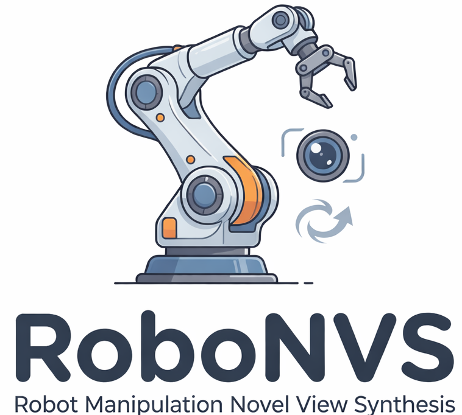
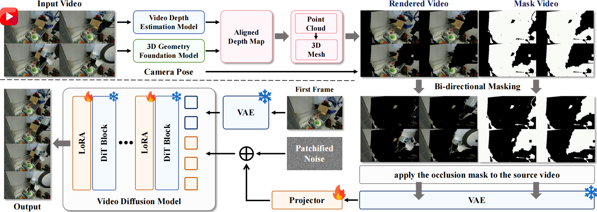
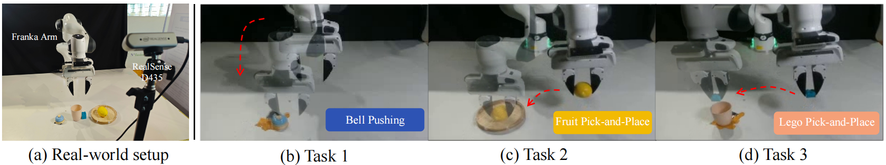
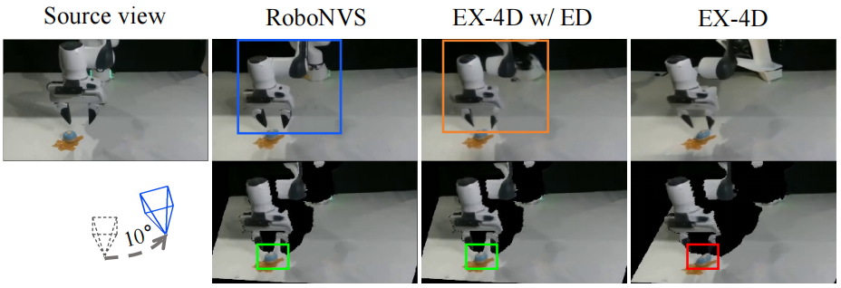

While multi-view demonstrations are known to improve robustness to camera shifts, we investigated whether they fundamentally enhance manipulation capabilities. By isolating viewpoint diversity and evaluating all policies from a single canonical camera, we ensured performance gains were not simply due to test-time view availability.
Internal Mechanisms: Multi-view supervision reshapes visual representations to focus on manipulation-relevant regions (like the end-effector and objects) rather than the background. It also improves action head robustness and stabilizes optimization dynamics.
➜ Motivated by these insights, we propose RoboNVS to synthesize high-quality multi-view demonstrations from monocular inputs.
To overcome the scarcity of multi-view data, we propose RoboNVS, a geometry-aware framework that synthesizes novel-view videos from a single monocular demonstration. Why Geometry Matters? Direct video generation often fails in robotics due to geometric inconsistency (e.g., distorted objects or hallucinated structures). Therefore, we explicitly incorporate 3D geometry as a strong prior.

Overview: RoboNVS reconstructs 3D geometry from monocular video, renders it under new viewpoints, and uses diffusion-based inpainting to generate physically consistent novel-view videos.
Problem: Monocular depth estimation faces a trade-off:
Solution: We align the two using a global scale-shift transformation, combining temporal consistency with geometric accuracy.
Problem: Standard inpainting suffers from mismatch between training masks and real occlusions caused by viewpoint changes.
Solution: We train with both directions:
Together, these designs enable RoboNVS to generate geometrically consistent, temporally stable, and physically plausible novel-view demonstrations.
We evaluate the efficacy of our method across three challenging manipulation tasks. We compare four data augmentation configurations: (1) Baseline (Monocular only), which uses no augmentation; (2) EX-4D; (3) EX-4D w/ Depth Alignment (EX-4D w/ DA); and (4) RoboNVS (Ours). For all augmentation-based methods, we generate four synthetic views at specified camera trajectories ({−20°, −10°, 10°, 20°}) to augment the training set. A Diffusion Policy is then trained on each augmented dataset. We report the success rates evaluated under the base-view to demonstrate how synthesized multi-view data provides geometric priors for robust manipulation.

Figure 1. Real-world Setup. Our evaluation environment and the three manipulation tasks: Click Bell, Pick Fruit, and Pick Lego. Each task requires precise geometric understanding of the target objects.

Figure 2. Qualitative Comparison. Visual results in real-world scenarios. RoboNVS demonstrates superior performance in both geometry reconstruction and mask completion quality compared to existing baselines.
| Method | Click Bell | Pick Fruit | Pick Lego |
|---|---|---|---|
| Baseline (Monocular only) | 25% | 10% | 5% |
| EX-4D | 40% | 35% | 30% |
| EX-4D w/ Depth Alignment | 50% | 40% | 40% |
| RoboNVS (Ours) | 70% | 60% | 65% |
Table 1. Success Rate Comparison. Mean success rates over multiple trials. RoboNVS significantly outperforms existing methods by providing high-fidelity synthetic data.
If you find our work useful in your research, please consider citing:
@misc{cai2026viewpointgeneralizationmultiviewdemonstrations,
title={Beyond Viewpoint Generalization: What Multi-View Demonstrations Offer and How to Synthesize Them for Robot Manipulation?},
author={Boyang Cai and Qiwei Liang and Jiawei Li and Shihang Weng and Zhaoxin Zhang and Tao Lin and Xiangyu Chen and Wenjie Zhang and Jiaqi Mao and Weisheng Xu and Bin Yang and Jiaming Liang and Junhao Cai and Renjing Xu},
year={2026},
eprint={2603.26757},
archivePrefix={arXiv},
primaryClass={cs.RO},
url={https://arxiv.org/abs/2603.26757},
}
BibTeX